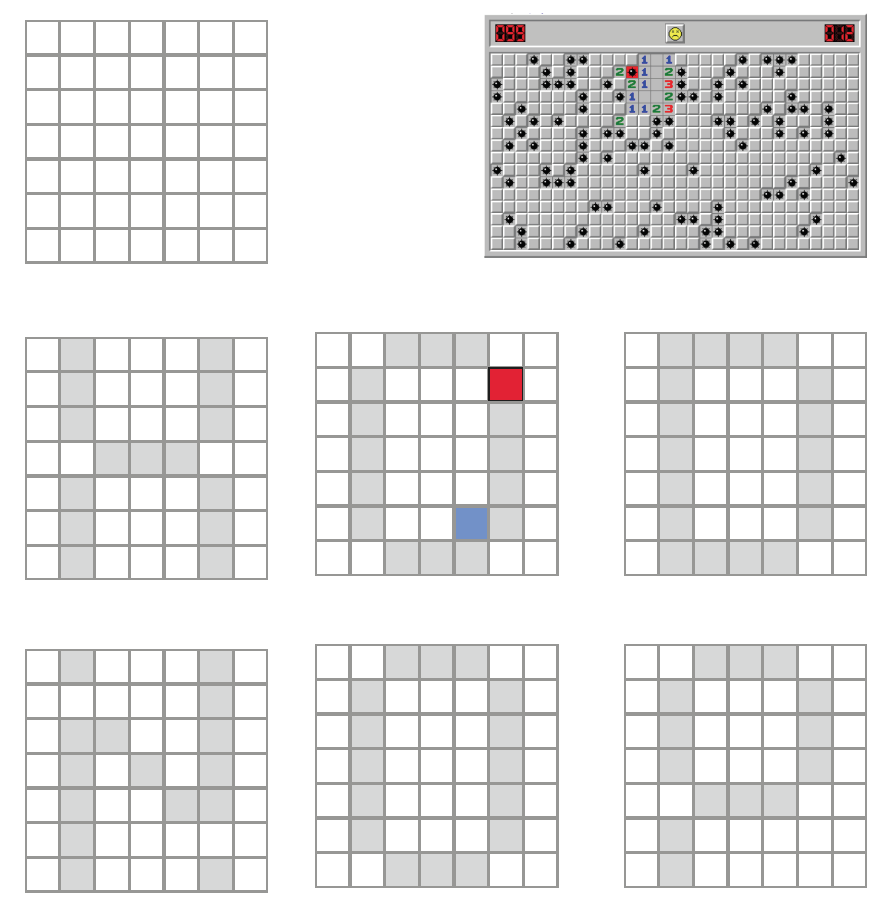
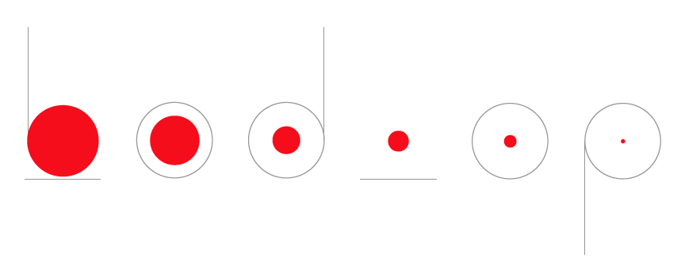
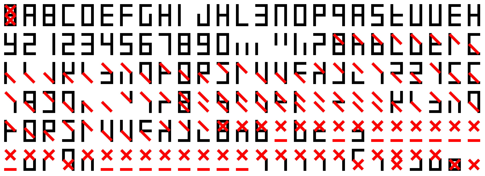
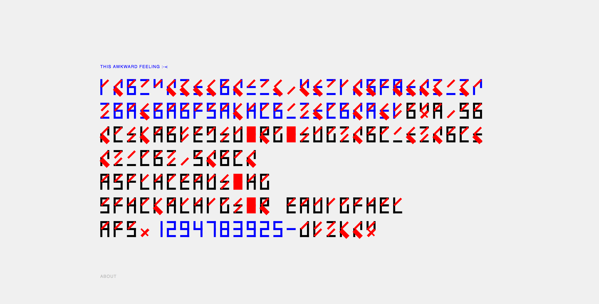
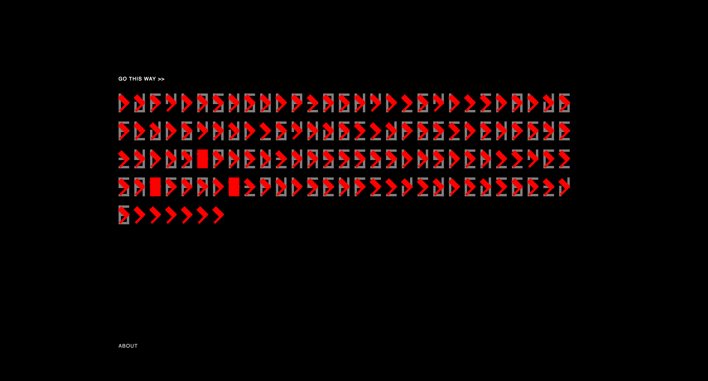
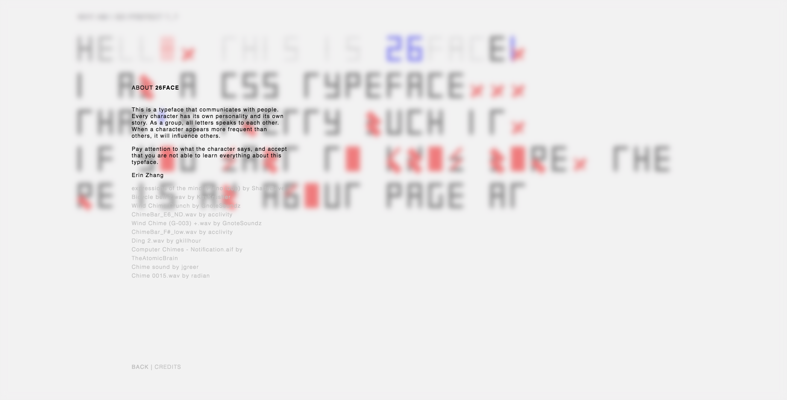

-> 26face // interactive typeface This is a typeface that communicates with people. Every character has its own personality and its own story. As a group, all letters speaks to each other. When a character appears more frequent than others, it will influence others.

-> CONCEPT Above are two concepts I proposed at the beginning of this project. One is inspired by the minesweeper. My idea is making a modular typeface that involves chance and randomness. The other is more about rhythm and system: each character has a core that expands as time passes. As the core grows, the character would eventually be covered by the shape, indicating the ephemeral quality of words and phrases.

-> TYPEFACE This is the first coded version of the typeface, using only html & css. Though it looks similar to the final, I improved the structure of the code over time.
  
-> WEBSITE These are screenshots of the final website. I include a demo on the about page, showing various behaviors triggered by the input. I assigned a certain behavior to each character, which will be triggered when one character appears the more frequently than others.
-> back